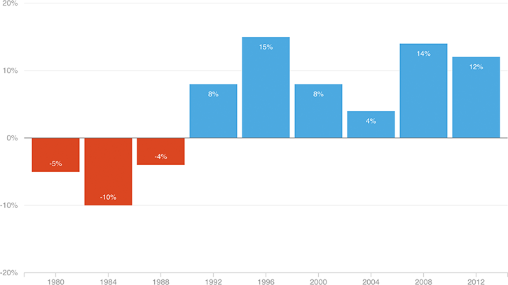

The Democratic Lead Among Women Has Solidified
These days, Democratic presidential candidates just don’t lose among women. Below is the percentage point margin by which Democratic candidates have won women in presidential elections since 1980.
